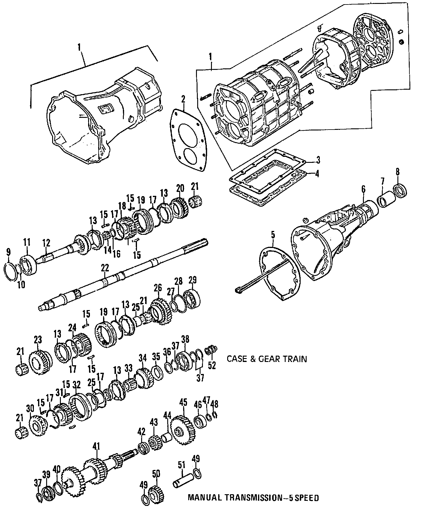
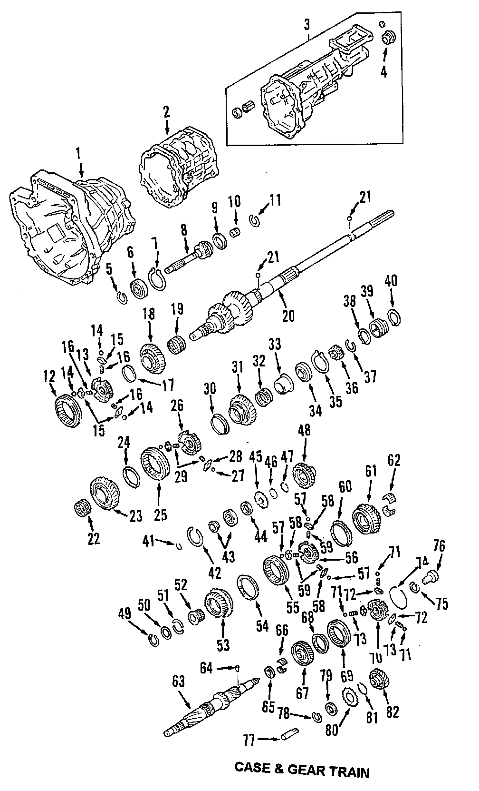
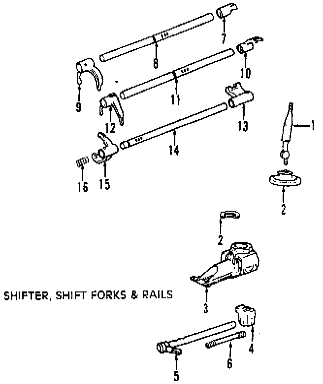
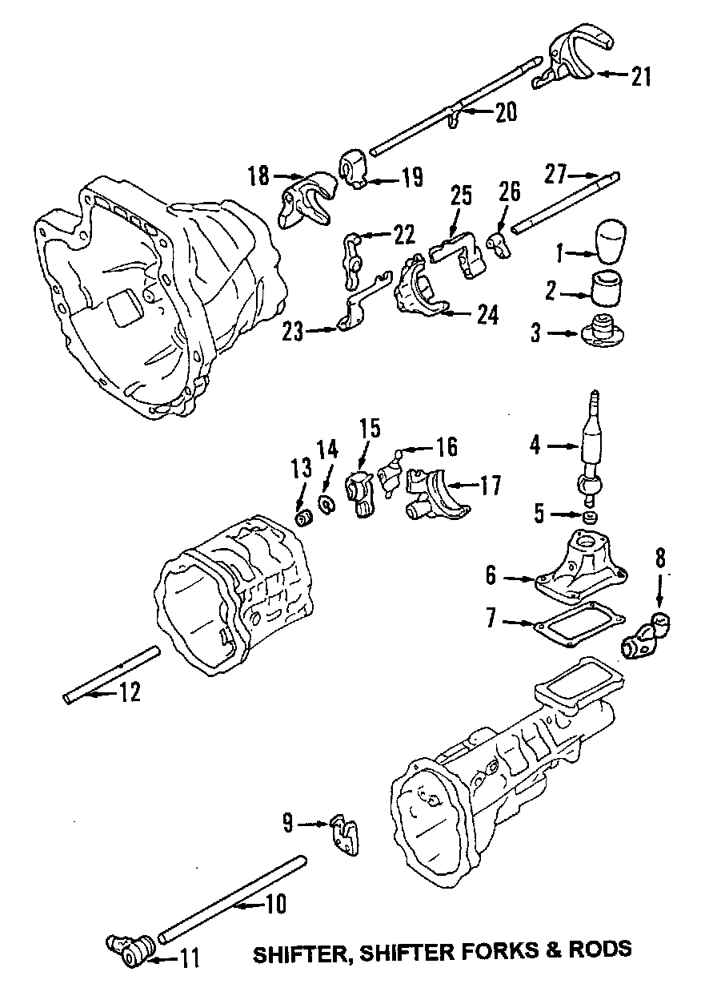

Operation CHARM
: Car repair manuals for everyone.
Home
>>
Mazda
>>
1999
>>
MX-5 Miata L4-1.8L DOHC
>>
Parts and Labor
>>
Transmission and Drivetrain
>>
Manual Transmission/Transaxle
>>
Images
Images
Gear Train & Case, 5 Speed:

Gear Train & Case, 6 Speed:

Gearshift Assembly, Shift Forks & Rails, 5 Speed:

Gearshift Assembly, Shift Forks & Rails, 6 Speed:
